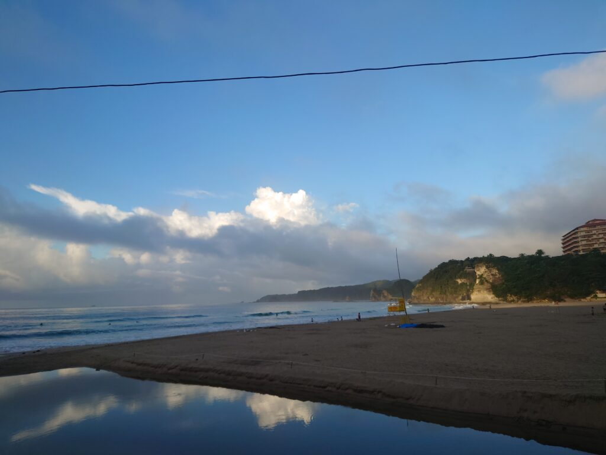
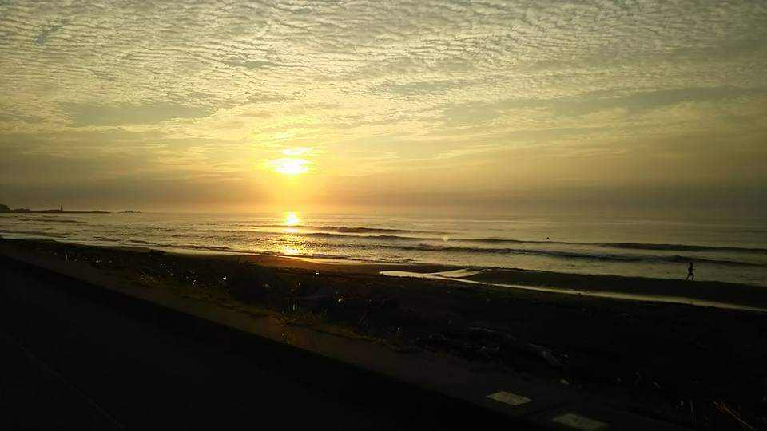
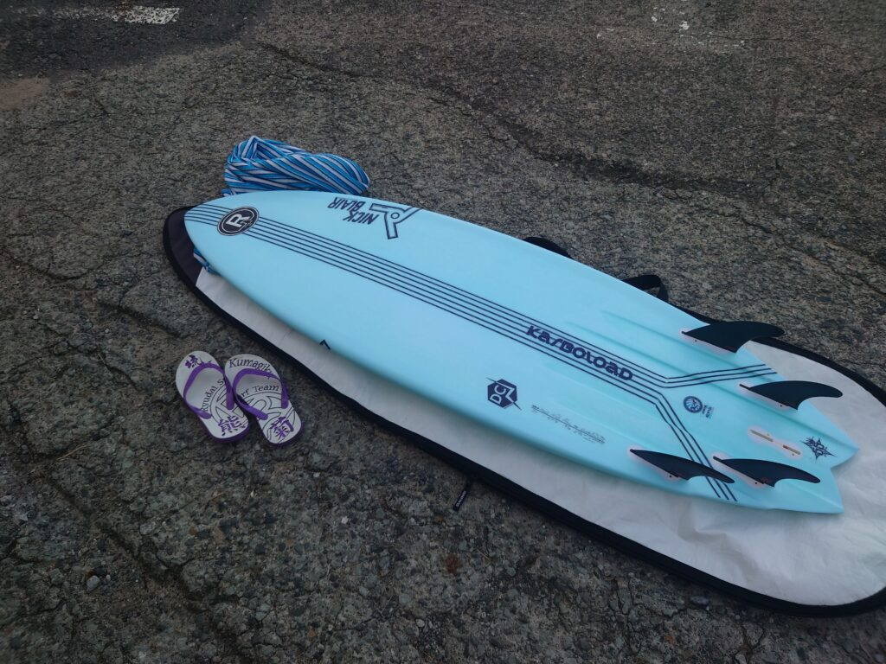

休日🌱
ハウスクリーニングやマンション清掃がお休みの日は「心とカラダのクリーニング」で海にサーフィンしに行ってます。
この夏は伊豆白浜で、台風の良い波を楽しみました。
普段は千葉の白渚(シラスカ)か、一宮で朝イチのサーフィンを楽しんでおります！
海で良い波で遊ぶと1週間はウキウキしています。心とカラダのフルセットクリーニングです！



ハウスクリーニングやマンション清掃がお休みの日は「心とカラダのクリーニング」で海にサーフィンしに行ってます。
この夏は伊豆白浜で、台風の良い波を楽しみました。
普段は千葉の白渚(シラスカ)か、一宮で朝イチのサーフィンを楽しんでおります！
海で良い波で遊ぶと1週間はウキウキしています。心とカラダのフルセットクリーニングです！


